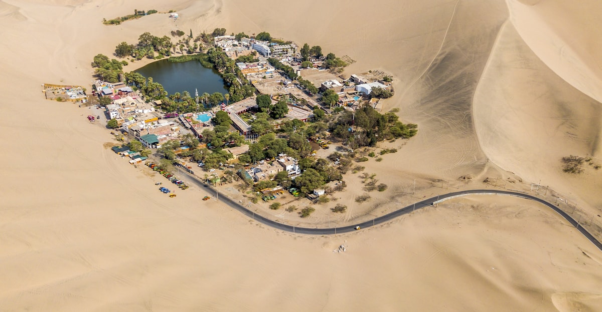

Más popular
Huacachina: Buggy & Sandboard
Vive la adrenalina de las dunas más altas del continente. Buggy 4x4, sandboard al atardecer y vista al oasis desde las cimas.
- ✓ Transporte desde Ica ciudad
- ✓ Guía certificado
- ✓ Buggy + tabla de sandboard
- ✓ Seguro de actividad